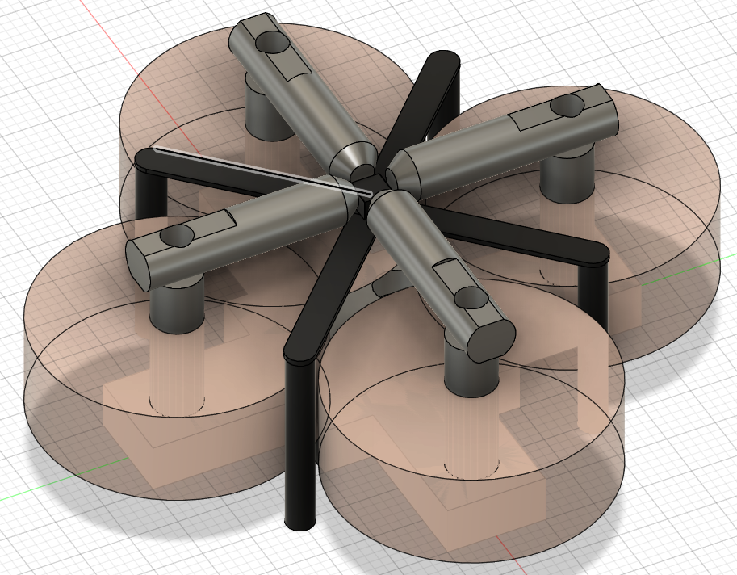
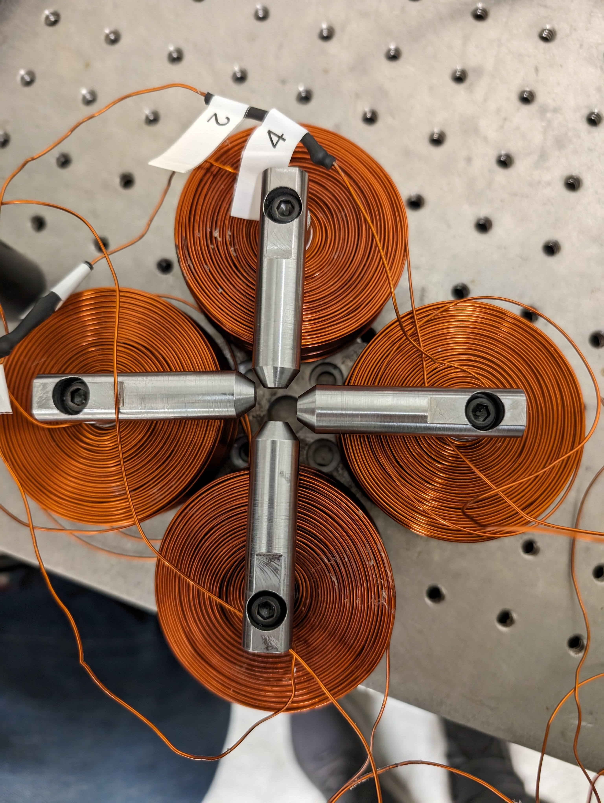

Completed on: 2023-09-18


Here we see the blueprint of the vector magnet as it was machined to the original spec before we attach the magnets made in our magnet maker! Unfortunately a quick glance tells you all you need to know about how strong of a field we could get from the magnet as the pole shapes are quite sub-optimal. Not sure what was going in my head right there as I reflect on this years laters (a quick search through my old photos showed a schematic where we can lay a glass slide atop the pieces and use the stray field as our field but for obvious reasons this is problematic). I also apoligize that the CAD is not quite the final product but just image only the matching pole piece was made 4 times.
 Here we see the vector magnet in its final form, ready to be used in our ST-FMR setup (or not)! I cannot in good conscience claim full ownership of this design as our undergrad Julian helped with the pole pieces of the fixed design and him and my labmate Liang wound most of the remaining magnets -- at least until an unfortunate accident. Hint: Look closely at the botom coil what do you notice? When we run these magnets they can get quite hot -- in fact in the process of making the magnet you actually end up shorting the coils to melt the thermoplastic coating of the wires to solidy the coils shape. What do you think happens when after its solidified we ramp up the current even further?
This project probably took the longest to complete. Above you have seen some cool photos detailing my experience trying to create a Spin-Torque Ferromagnetic Resonance (ST-FMR) setup for our lab. If you've had the chance to take a look through the timeline at the vector magnet (fun fact the vector magnets original design was completed before the magnet maker was even operational) you will see that I noted it was initially intended to be used for the ST-FMR setup. Unfortunately not everything works out the way we want it too (and HAD it worked, it would have made our lives MUCH easier). So to draw up the needs of our ST-FMR setup as I was asked to design it we require a relatively strong field (>1000 Oe) that can be precisely rotated to give any arbitrary in-plane field orientation. Most importantly, we must be able to land a Ground-Signal-Ground (GSG) probe on our sample that is mechanically isolated from the magnet assemly. Remember this part, as it dictated the design considerations of the setup. We already had a probe manipulator with 6 axes rotation that I was to incorporate in the design as well as some probes. Sadly, some quick math showed that it was not going to be possible to use the probe tipes we already had as the probe manipulator would not be able to clear the magnet's poles (Hint: Why was my original vector magnet design flat at the top? -- see I knew there was a reason for that silly design). Thus I was forced to make a compromise and found some very neat probes that gave us some vertical clearance so the probe manipulator could clear the magnet assembly. Working in the constraints of the probes vertical clearance we were limited in where we could place the magnetic coils, as if we wanted to put them on the horizontal poles of the magnet they would interfere with the clearance of the probe, allowing for a very low turn/length count -> too small of a field. With that consideration, like the vector magnet I opted to mount the coils vertically and hope the flux closure of the low-carbon steel would be enough. As this was a more complicated project I opted to roughly sketch out the assembly before consulting the experts in the machine shop for the final touches. I opted for a design that allows variable pole spacing (to fit sample of different sizes and a way to get more field for small samples). Thus the beautiful monstrosity you see above was born. It consists of a lazy susan mounted to a thorlabs plate that we can screw in the magnet with a hole running through the entire assembly to allow us to connect the sample holder to the optical table the entire system rests on. Thus the magnet is entirely mechanically isolated from the sample and probe itself only connected via the optical table which is unavoidable and acts as a large sink regardless so unimportant. This allows the electrical noise in the magnet to not interfere mechanically with our measurements. Thus we have created a magnet that can rotate to any arbitrary angle completeley isolated from our measurement apparatus. Now, we could have stopped there but who wants to manually rotate anything? So I opted to put a large gear (sprocket for you technical folks) in between the lazy susan and the thorlabs plate to allow us to use a combination of a sprocket and chain. Thus we can preciesly control the magnitude and direction of the magnetic field in the sample entirely from the computer allowing for automated measurements (since these can take ours to run we can run them overnight when less people are in the lab and less noise sources are around). All that's left is to code the system up and hope it works! (Spoiler it did). The final touches (as seen in the final images) were done by my labmate Liang (who I was tasked to help make the setup for) where he finalized some of the code based on my previous experience at Berkeley. Thus a robust intrument was born hopfully to outlast my PhD career. A few fun side tangents, later on we had Alex in our lab create a nice enclosure for the stepper motor driver to better secure everything in place.